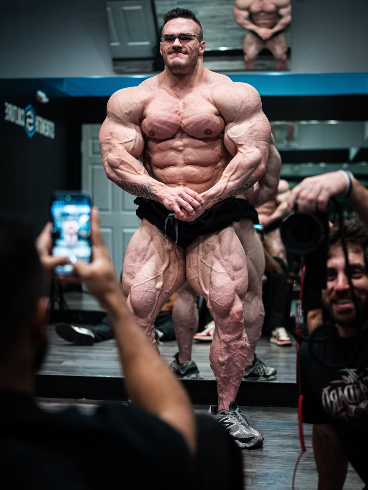

El arte del fisicoculturismo

Esculpir el cuerpo, construir una vida
El fisicoculturismo es mucho más que levantar pesas: es un arte que tiene al cuerpo humano como lienzo. Cada atleta trabaja durante años como un escultor, buscando la simetría, las proporciones y la definición muscular que luego se exhiben sobre el escenario. Pero detrás de esa imagen hay algo más profundo: es un estilo de vida. Se vive en cada entrenamiento planificado, en cada comida pesada y medida, en las horas de descanso que permiten crecer y en la disciplina de repetir el proceso todos los días, incluso cuando la motivación no aparece. La constancia, la paciencia y el respeto por el propio cuerpo son los verdaderos cimientos de este deporte.
Ver más